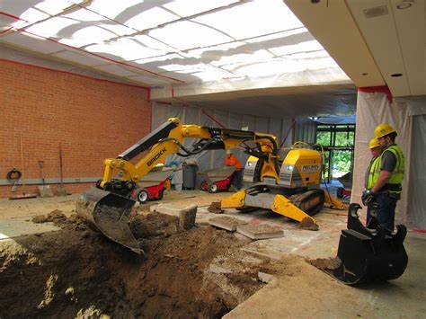

About SW Iowa Excavation
SW Iowa Excavation was founded in 1949 by Tim and Jim Hancock. They started their business out of a small machine shed with one bulldozer and a small excavator. They specialized in building terraces for local farmers. As the business grew, they started clearing tree lines, digging ditches, and just about anything else their loyal customers were needing.
Specialized Services
We now offer many services including drainage tile to keep those high yields for your crops, formation of river levees, as well as your normal day to day excavator needs. We now have the capability of indoor excavating jobs as well.
There is no job that is too big or too small that SW Iowa Excavations cannot handle. Feel free to contact us at anytime for your excavator needs.